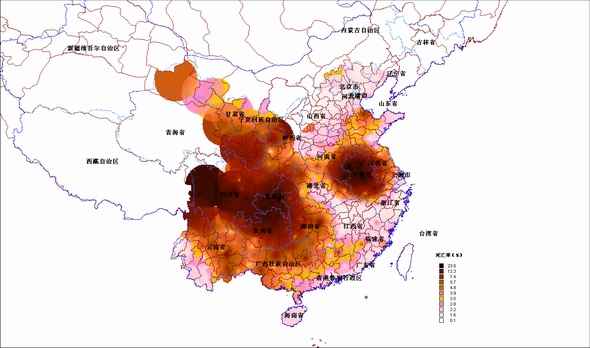
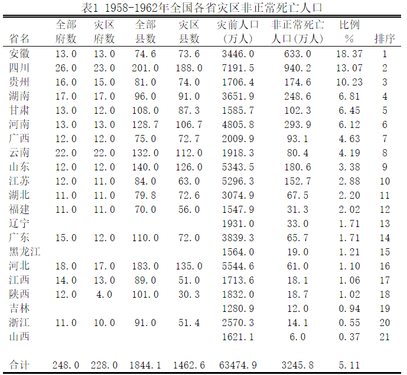
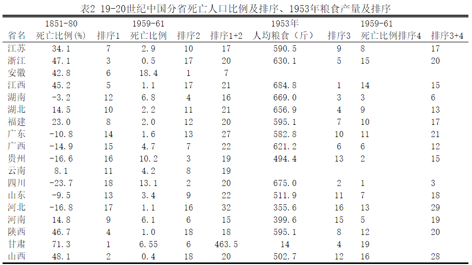
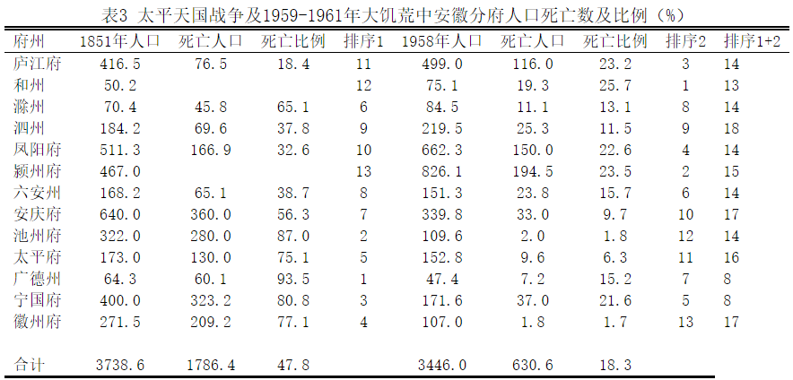
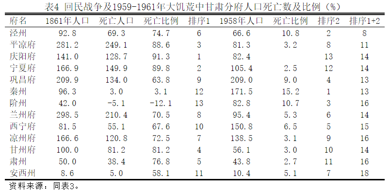
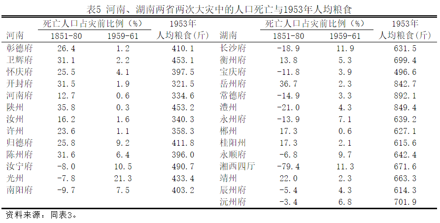

内容摘要：本文采用人口学和历史地理学的方法，以县级政区为基础，以虚拟的“府”级政区为单位，重建1959-1961年中国各地非正常死亡人口数。计算结果表明，1959-1961年中国的非正常死亡人口多达3250万。将1959-1961年的分府死亡人口与1851-1875年的分府死亡人口进行对比，可知两个时代的人口非正常死亡呈强负相关。本文认为，造成这一奇特结果的原因在于民间关于饥荒的“历史记忆”，而与各个区域人均拥有的资源及粮食无关。
关键词：1959-1961年，大饥荒、府、人口非正常死亡
作者介绍：曹树基，1956年生，历史学博士，上海交通大学历史系教授
The deaths of China’s population and its contributing factors during 1959-1961
Abstract：Adopting the method of demography and historical georgraphy，andon the basis of the administravie division of county and an imaginary Fu（府），this article reconstructs china’s abnormal death roll during the period of 1959-1961，which amounts to 32，500thousand.And we will find a great negative correlationbetween the death roll of 1959-1961and that of 1851-1875.This article believesthat，it is not the average resources and food in different regions，but the folk”historical memory”about famine that leads to this special result.
Key words：the period of 1959-1961the great famine fu（府）the abnormaldeath
一、问题的提出
关于1959-1961年中国人口的非正常死亡[1]，有关研究已有多种。彭尼• 凯恩（Kane, Penny）在他的著作中对以前各家研究进行了详尽的评述，其中包括对于死亡人口的估计[2]，兹不赘言。此后，又有杰斯帕•贝克（Jasper Becker）利用一大批新的资料，包括各种回忆录、自传性的小说、在海外流传的中共文件以及他自己的调查，详细描述了各地的灾荒情形。对于人口死亡的数量，也有归纳性的说明。[3]在中国大陆方面，曾任中国统计局长的李成瑞发表论文，比较西方人口学家与中国人口学家的几种分析，阐述了自己对于不同分析方法和数据的观点。[4]
中国政府至今没有公布三年大饥荒中人口死亡的确切数据。学者们的推测或估计，主要是以1953年、1964年、1982年的全国人口普查数据为基础，或辅以1982年“千分之一人口生育率抽样调查”以及其它各种数据进行的。各种研究方法得出的结论相差太大，有必要对其进行简短的说明与评论。
1984年，安斯利•科尔（Ansley J. Coale）根据三次人口普查资料及1‰生育率抽样调查资料，测算两次人口普查间隔的历年出生人口和历年死亡人口，按线性趋势算出1958年至1963年的线性死亡人数，再与估算的实际死亡人数相比，求得超纯线性死亡人数2700万。[5]在上引文中，李成瑞指出科尔的研究存在若干缺陷，经过李成瑞修正后的中国人口非正常死亡数约为2200万。
1986年和1987年，蒋正华、李南先后发表两篇文章。他们利用1953、1964、1982年人口普查全国年龄、性别报告数据，并根据1982年人口普查资料编制1981年人口生命表，再建立动态参数估计模型，求解后得出中国历年人口出生率和死亡率，并据此估算历年死亡人数。再根据预期寿命的变化，估算正常死亡人数，用历年死亡人数减去正常死亡人数，所得即是非正常死亡人数。[6]与西方学者同期的研究相比，李成瑞认为中国学者蒋正华的研究方法更具科学性，蒋正华认为大饥荒中中国非正常死亡人口大约为1700万。
1993年，金辉采用了完全不同的分析方法。他根据中国政府公布的1953-1966年历年人口统计数，指出1960和1961年，中国人口净减少1348万；又按照中国政府公布的出生率，计算出1960年和1961年的出生人口合计为2568万，根据1956和1957以及1962-1963年平均死亡率作为1959-1961年的正常死亡率，估算出此两年中正常死亡的人口约为1395万。
出生人口-正常死亡人口+总人口减少值=非正常死亡人口
据此式，2568-1395+1348=2521，即1960-1961年的非正常死亡人口可能达到2521万。按照同样方法计算，如加上1959年，三年间中国大陆的非正常死亡人口不低于2791万。
金辉认为，总人口减少值也不可靠，因为，在乡村人口锐减的同时，城市人口仍然是增长的。扣除城市人口增长数，中国农村非正常死亡的绝对数字，就比统计意义上的全国非正常的总数还要多出680万。将总人口减少值修正以后，三年灾难中，中国农村的非正常死亡人口就可能达到3471万。[7]
在上述第一项研究中，1‰人口抽样调查数据可能不适合大饥荒死亡人口的研究。样本分布的均衡与不均衡，样本量的大小，饥荒地区对于死亡人口的有意隐瞒，都可能导致研究的失误。最值得讨论的是上述第二项研究。在这项研究中，蒋正华、李南发表的两篇论文资料并不一致，其原因在于第二篇论文对在历年人口出生率和死亡率的漏报进行了估计。在上引文中，李成瑞对蒋正华的研究进行评述，只是他所引用“蒋正华资料”与蒋正华、李南上引两文的数据皆不相同，介于两组资料之间，可能是对0-1岁死亡的婴儿年龄进行标准化处理所致。有关这一计算过程究竟由谁并在哪篇论文中完成的，李成瑞文没有交待，本文无法追究。根据蒋正华三组资料中的历年人口死亡率进行分析，1959-1961年全国非正常死亡人口为1650-1790万，平均为1711万，与蒋正华根据生命表所得“困难时期”1700万非正常死亡人口数接近。根据国家统计局公布的死亡率计算得出的非正常死亡人口为1500万。蒋正华资料对于国家统计局资料的修正，可能仅仅是对死亡漏报人口的修正。

死亡率分布图
从理论上说，用人口出生率减去人口死亡率，即得人口自然增长率。在没有规模性的跨国境人口迁移的背景下，人口自然增长率就是人口增长率。从理论上说，只要统计口径一致，根据人口增长率和上一年的总人口，就可以计算出下一年的总人口。然而，无论是采用国家统计局公布资料，还是采用蒋正华的三组资料，所得 1959年以后历年总人口皆比国家统计局公布人口多400万-700万。另外，在国家统计局公布的历年人口数中，1959年人口多于1960年。这一资料与中国的社会现实是吻合的。而在其它四组资料中，1960年人口多于1959年。很明显，灾前或灾中人口死亡率的人为篡改，是导致这一系列错误发生的根本原因。
比较而言，上述第三项研究，即金辉的研究，方法上是比较可靠的。这是因为，这一方法可以不需要利用大灾中的死亡率数据求出真实的死亡人口。要知道，更改大灾中的人口死亡率数据，是作伪者最简便、最直接的作伪手法。[8]
不过，金辉的第一项研究将中国城市人口的增长另作统计，是不妥当的。因为，金氏公式的第一项“出生人口”，已经包括城市人口。由于大多数城市保持正常或稍低的人口出生率，才使得就全国而言，大饥荒期间的人口增长率仍然超过正常的人口死亡率。不仅如此，有相当多的中小城市，甚至省会城市，也经历规模性的人口死亡。笼统地将城市排斥在灾区之外，是不妥当的。
在我看来，中国政府公布的历年人口增长率和死亡率数据，需要得到地方数据的配合或支撑。也就是说，只有将研究深入到省以下的政区，才有可能做到这一点。鉴于此，本文拟对金辉的研究方法进行修正，并应用于省以下区域研究中。区域人口研究的过程更加复杂，需要考虑的因素也更多。只有通过对区域死亡人口的认真求证，全国性的人口死亡数据才有坚实的基础。
二、本文的资料与方法
至今为止，各省新修地方志的工作已经基本完成并且出版，而《人口志》又是每本新修地方志必备的内容。之所以不能通过新修地方志资料的累加来重建大饥荒中的死亡人口，是因为许多地方志中并没有历年人口数据的记载，即使有，对于其可靠程度的确认也还是一个问题。本文的研究证明，在经历了人口大规模死亡的地区，地方政府公布的数据有许多是不可靠的。企图通过各个地区人口死亡数相加的方法来完成本项研究，是不可行的。
本文主要采用1953 年、1964年和1982年全国各市县人口普查数据作为分析的基础。再通过各地地方志中记载的历年人口数，计算出各地灾前、灾后的人口增长速度。以 1953年和1964年普查人口为基础，根据灾前、灾后的人口增长速度，即可求得1958年和1961年的人口。用1958年人口减去1961年人口，所得净减少人口，此即非正常死亡人口的一部分。
关于1953年和1982年人口普查的准确性，学界已经没有太多的疑问，只有1964年的人口普查数据受到一些学者的质疑。杰斯帕•贝克认为，在许多省，对于大饥荒负有责任的官员仍在掌权，他们完全有可能更改普查数据。[9]我认为这是一种基于逻辑而不是基于实证基础上的推测。根据这一逻辑，为了掩饰人口的死亡，饥荒地区的地方政府只能虚增1964年的人口。然而，这一虚增的代价是，1964-1982年的人口年平均增长率必定会低于正常值，而事实上，这种异常在我的研究中从未发现过。地方志中披露的历年人口统计数据及相关的人口出生率、死亡率和人口迁移数据，大部分是真实的，但也有相当一部分是虚假的。在人口死亡的较多的地区，更是如此。
本项研究主要包括以下几个步骤[10]：
第一，鉴于1953－1982年间中国县级政区的巨大变化，本文采用清代的“府”级单位作为分析的基本政区。清代的府是统县政区，通常包括几个县或十几个县，与中华人民共和国政府的“专区”类似，但不能完全对应。采用这一稳定的分析单位，可以最大限度地消除县级政区变动所造成的误差，即府境之内的县界变动不予考虑，仅对跨府的县界变动给予调整。采用这一分析单位，有助于笔者将1959-1961年的大饥荒与19世纪下半叶的灾难与饥荒联系起来进行思考，并得出有价值的结论。
第二，与人口普查数据不同的是，地方志中的数据多为年末统计数据，且政区大都经过细致的等面积处理，据此而得出的人口增长速度，基本排除了因政区调整造成的误差。根据一府之中若干县的灾前人口增长速度，可以推得全府的灾前人口增长速度，从而求得灾前人口。县级资料越多，结论就越可靠。
第三，地方志不仅记载历年人口，而且记载历年人口出生率和死亡率。在一般情况下，两套数据是吻合的。在不存在迁移人口的前提下，用人口出生率减去人口死亡率，所得人口自然增长率与根据人口总数求得的人口增长率或人口年平均增长率一致。然而，在一些经历了大规模人口死亡的地区，地方志所记载的灾前、灾后人口与人口出生率与死亡率，完全不能对应。如在安徽省的一些地区，灾前人口被缩小，以至于灾前的人口增长率，低得使人不能相信。在全国许多地方，灾后两年的人口往往被夸大。以至于1963年、甚至1962年的人口，已经接近或者超过1964年。[11] 在一些地区，人口总数是虚报的，而人口出生率和死亡率数据却是真实的，据此可知灾后的人口增长率。
灾后几年中国的人口增长速度，要比 1964-1982年间的人口增长速度快许多。灾情越重，灾后几年的人口增长速度往往越快。这一规律，也可以作为判断灾后统计数据真伪的标准之一。在人口死亡规模较小或没有死亡的地区，地方志所记载的灾后人口数据相当可靠。灾情严重的地区，地方志所记载的灾后人口数据则往往虚报，对于这类地区的人口数据，需要认真甄别后使用。
第四，在一般情况下，大饥荒从1959年年初开始，至1961年上半年或年底结束。也有些地区的人口规模性死亡，始于1958年下半年，或结束于1960年年底，或延续到1962年。根据地方志记载的历年人口数，求得历年人口增长率，当人口增长速度迅速下降，即意味着大饥荒的发生。当人口增长速度迅速上升，则意味着大饥荒的结束。本文根据不同地区的不同情况作相应的调整。
第五，将大饥荒时期超过正常死亡人口的自然增长人口当作灾前人口的一部分。这样，在确定灾前、灾后时点时，即使将时间定得宽一点，也不会造成对于死亡人口低估或高估。
第六，有些地方志记载了历年迁入人口与迁出人口，多数地方志没有此类记载。然而，如果地方志所载历年出生人口、死亡人口和历年人口总数是正确的，可以根据这三项数据求出净迁移人口。
第七，用某地灾前人口减去灾后人口，所得为净减少人口，再加上大饥荒时期超过正常死亡人口的自然增长人口，所得为减少人口或称全部减少人口，再加净迁移人口，所得为这一地区的非正常死亡人口。正常的人口死亡率，灾前以1957年或1958年为标准，灾后则以1962年或1963年为标准，具体视各地灾荒发生时间而定。在计算过程中，通常用1959年和1960年人口死亡率与灾前人口死亡率比较，用1961年人口死亡率与灾后人口死亡率比较。至于蒋正华认为1960年的死亡人口漏报率只有20%，远低于此前此后40%的水平。我对这一观点持谨慎的怀疑。理由是，从已有的研究成果看，灾后政府大灾中的死亡人口的清理，并未持积极的态度。
第八，在一些人口死亡规模较小的地区，利用上述方法也不可能发现非正常死亡人口。本文采用个案分析的方法，利用地方志所载历年人口数和历年人口死亡率数据，将各县市非正常死亡人口累加，得出各府的非正常死亡人口。这一做法的缺陷是过度依赖地方志，当地方志的记载不详或找不到足够多的地方志时，就有可能造成遗漏。只不过，这类地区人口死亡的规模不大，即使存在遗漏，遗漏的人口也不会很多。
此外，对于一个“府”而言，其中心城市的迁入人口主要来自周边农村，因此，本文在计算以府为单位的人口非正常死亡时，并不将城市剔除，除非这一城市人口增长速度正常，且无规模性的人口死亡。这样一来，因城市化而导致的人口迁移就可以不加以专门的讨论。
总之，本文的主要思路是，以1953年、1964年人口普查数据为基础，利用地方志所载资料求出各府灾前、灾后的人口增长速度，确定各府的灾前、灾后人口，藉此再求出各府非正常死亡人口。人口普查资料的可靠性和完整性是其它任何资料所不可替代的，这是本项研究赖以进行的基础。地方志资料虽然不完整，但从抽样的角度看，却已足够。[12]两套资料的配合应用，可以最大限度地消除误差，排除错误。可以最大限度地求解大饥荒造成的各府人口损失，并藉此求得各省非正常死亡人口，进而求得全国非正常死亡人口。
# 三、人口死亡分析：以庐州府为例
本文不可能展开各个区域的人口死亡情况的研究。仅以安徽的庐州府为例，说明上述研究方法的运用。
清代的庐州府辖合肥市、肥东、肥西、巢湖、庐江、无为、舒城。除了1936年舒城县部分地区划给新成立的岳西县外，少有其它跨府境的县界变化。1953-1964年合肥市人口从18.4万增加到43.1万，年平均增长率高达80.8‰。合肥市的两个附郭县肥东和肥西，人口大量减少，同期年平均增长率分别为-14.9‰和-16.9‰。如不深究，可能认为合肥市人口的高速增长是将肥东、肥西县境的一部分划归合肥市所致。然而，将合肥市、肥东县和肥西县合计，同一时期三县市人口年平均增长率只有0.1‰，几无增长，而1964-1982年的人口年平均增长率则为22.9‰。由此可见，合肥市及周边县份的人口损失相当严重。《安徽省志》第八卷《人口志》显示，1957年和1962年，合肥市人口死亡率为5‰左右，1960年达到11.27‰，死亡6410 人。[13]然而，查《合肥市志》，灾前、灾后的人口增长速度与《安徽省志》所载相同，1960年人口死亡率却高达16.23‰，死亡9170人。[14]《合肥市志》不可能夸大灾情。接下来的问题是，《安徽省志》第八卷《人口志》的数据源于何处，并在多大程度上隐瞒了死亡人口？
根据人口普查资料，1953-1964年庐州府境人口年平均增长率为-3.4‰，1964-1982年为25.5‰。据此判断，三年大饥荒中，庐州府境出现大规模人口死亡。根据《安徽省志》第八卷《人口志》，庐州府1954-1957年人口年平均增长率为24.7‰，根据人口出生率和人口死亡率计算所得两个年份的人口增长率分别为22.82‰和19‰。合肥市、肥东、肥西、庐江、舒城、无为六市县1953-1958年人口年平均增长率为23.7‰，巢县1953年中至1955年底为25.6‰[15]，与《安徽省志》第八卷《人口志》的记载大致吻合。庐州府灾前人口的增长速度不高，是由于当地遭遇了1954年大水灾，除了人口的非正常死亡外[16]，政府还组织人口外迁。如无为县有数万灾民迁入江南的旌德、泾县等县。[17]尽管以后有部分人口迁返，但人口外迁已经对庐州府的人口增长产生影响。不过，还需要说明的是，据《无为县志》，1954年移至邻县安置的灾民人口多达128072人，但全县人口并没有如此大的变动。这说明这类安置是暂时性的，不久灾民陆续返回家园。
庐州府境灾后人口增长速度的确定要复杂得多。如庐江县，1961年人口为64.3万， 1964年为67.1万，三年中的人口年平均增长率只有14.1‰，然而，三年间的人口自然增长率分别为43.2‰、46‰和40.6‰。如果两套数据皆能成立，则意味着灾后三年庐江县有5.9万人口的净迁出。这是不可能的。在舒城县，1961年人口为57.3万，1964年只有57.9万，人口几乎不变。然而，三年间该县人口自然增长率分别为45.1‰、44.2‰和39.4‰。如果人口年平均增长率为真，则意味着三年中的净迁出人口多达7万。这更是不可能的。很显然，庐江和舒城两县皆提高了大灾中的人口。巢县的数据更加离谱，1964年人口普查数仅略多于1962年和1960年人口，皆不可用。
肥东、肥西、无为三县合计，1961-1964年人口年平均增长率为39.4‰。合肥市灾后三年净迁出人口9.2万，人口年平均增长率为-30.5‰。不过，对合肥市历年人口数和人口自然增减数进行分析，仍可发现1959-1960年有1.1万人口的高估。这批人口主要来自政区变动中从邻区划入的人口。修正后的合肥市灾后人口年平均增长率约为23.1‰。将肥东、肥西和无为三县作为合肥市以外庐州府境人口增长速度之代表，加权平均，灾后三年庐州府境人口年平均增长率为33‰。
根据《安徽省志》第八卷《人口志》，1962和1965年，庐州府境人口增长率分别为42.01‰和37.6‰，根据人口总数计算所得1962-1964年人口年平均增长率为36.4‰。这一数据略高于上述分析。兹以33‰的人口年平均增长率测算庐州府灾后人口。
分别以1953年年中和1964年年中人口普查数据为基础，分别以23.7‰和33‰的人口年平均增长率计算，可以求出1958年底和1961年底庐州府境的人口数。从1958年底至1961年底，庐州府净减少人口约109.3万。如上文所述，净减少人口还不是全部的减少人口。将大饥荒期间超过正常人口死亡率的自然增长人口计入之后，灾前人口还应增加，而减少人口也将随之增加。以肥东县为例，1959-1961年平均每年人口出生率为12.02‰， 1957年和1962年人口死亡率为7.95‰和9.18‰，平均为8.57‰。三年合计，人口出生率超过正常死亡率约10.4个千分点。依同样的方法，肥东、肥西、无为、庐江四县合计，三年大饥荒中，人口出生率超过人口正常死亡率约12.8个千分点，合肥市约36.4个千分点。加权平均，约为15个千分点。为了计算的简便，可以认为，在庐州府境，三年大饥荒中超过正常人口死亡率的人口，大约占1960年庐州府境人口总数的15‰。如此，庐州府境灾前人口还应增加6.7万。合计减少人口116万。
据上引各市县志，从1959年至1961年，合肥市人口净迁入2.5万，无为县净迁出人口 0.9万。其它县因缺乏有关人口迁移的数据，需要认真讨论。肥东县1959-1961年的死亡人口分别为1.6万、8.2万和0.3万。1961年的人口死亡率为所有年份中最低，只有4.3‰，不可信。从1958年底至1961年底，肥东县人口净减少18.5万，三年中出生人口2.7万，死亡10万人口，自然减少人口7.3万。合而计之，共有11.2万人口不知去向。又因1959年和1961年的出生人口与死亡人口相当，故可断定不知去向的11.2万人口主要是在1960年失踪的。一年中一个县有如此众多的人口外流，县志中不会不提及。一个县有如此众多的人口外流，灾后不可能不返迁。外流人口的返迁，必定引起灾后人口的高速增长，人口年平均增长率将超过人口自然增长率。肥东县1962年净增6.2万，人口增长率高达101.6‰，似乎是外流人口返迁所致。然而，1962年人口已经接近1964年，如果1962年人口数为真，至1964年人口年平均增长率只有4.7‰，显然是不真实的。也就是说，1962年的肥东县人口数是虚夸的。从1961年至1964年，肥东县人口年平均增长率为36‰，三年人口自然增长率分别为41.46‰、46.29‰和 40.30‰，均高于人口自然增长率。如下文所述，安徽灾后人口出生率有可能浮夸，不足为信。然而，就灾后三年36‰的人口年平均增长率而言，虽有人口迁入引起的增长，但作为合肥市的附郭，1962年的遣返农村人口，一定有相当部分迁入肥东。要知道，1958年肥东县人口少于1957年，即是大量人口迁入城市的结果。也就是说，如果说36‰年平均增长率包含有人口迁入因素的话，也只是1958年进城的农民返迁，而不是大饥荒中的外流人口迁返。很显然，《肥东县志》所载1960年死亡人口有重大隐瞒，数量多达十余万人。
巢县1959-1960年死亡56251人，1962年巢县人口与 1960年相当，死亡人口只有2782人，推算1959-1960年巢县非正常死亡人口约为5万。1960年较1959年全县人口净减少9.3万，加上超过正常死亡率的出生人口约1万人，减少人口共约10.3万。1960年净迁出人口5.1万，加上非正常死亡人口5万，合计为10.1万，与全县减少人口数基本相等。据此，巢县公布的1959-1960年人口数据似乎是真实的。只是由于1961年数据缺载，令人对这一看似真实的数据心存疑虑。
不妨对1961年的巢县人口进行以下推测。已知巢县1962年底人口为45.4万，当年净迁入人口1万，人口自然增长率为35.78‰，用1962年年底数减去净迁入人口，再除以1.03578，就可得到1961年年底人口的近似值42.9万，较1960年底的45万人口净减少2.1万。已知1960年的出生人口与正常死亡人口相当，假定1961年也是如此，在不考虑迁移人口的前提下，净减少人口也就是全部减少人口。如果1961年人口死亡率为16‰，折合0.7万人口，至少有1.4万人口不知所踪。
或有人认为这1.4万人口也可能外迁。果真如此，三年大饥荒中巢县的净迁出人口将多达5.6万。一般说来，在外迁人口多的地区，灾后返迁人口也多。1962年巢县净迁入人口1万，看似这一规律的反映。其实不然，1962年因忠庙乡从合肥市划回巢县，净增0.7万人口。181963年，巢县净迁出人口0.8万，死亡0.4万，出生2.8万，用出生人口减去死亡人口和净迁出人口，全县增加 1.6万人口。巢县人口总数的增加，正合此数。不幸的是，1964年人口普查数据只有45.7万人口，而1963年人口多达47万，仍然超过1964年，就使人不能不怀疑1963年的人口外迁，是《巢湖市志》作者编造的。1964年的人口普查数据使得数据编造露出了破绽。
另外，《巢湖市志》还记载1967年全县人口51.1万，从1964年中至1967年底，人口年平均增长率为32.4‰，相当合理。假定1963年的数据为真，从 1963年至1967年，人口年平均增长率只有21.1‰，低于1964-1982年的24.7‰。对于一个经历了大饥荒的地区而言，这是根本不可能的。
从1953年中至1955年底，巢县人口年平均增长率为25.6‰。以此推及1958年，巢县人口有56.3万。根据上述记载，以35‰的年平均增长率回溯，1961年底有人口41.9万，三年间净减少人口14.4万。1960年人口出生率只有7.54‰，与正常人口死亡率相等，1959年人口出生率为 23.33‰，超过正常死亡率约13个千分点，灾前人口还应增加0.7万，合计减少人口15.1万。上文证明1959-1960年净迁出4.2万人口为假，巢县非正常死亡人口即为15.1万。
无为县是三年大饥荒的重灾区，1964年较1953年人口少近20万。1960年无为县人口较1958年要少近30万，而县志所载三年大饥荒中的全部死亡人口只有13.6万。由于三年中净迁出人口不足万人，因此推断，《无为县志》隐瞒了大量死亡人口。在人口死亡数量多达30余万的无为县，净迁出人口也不超过1万人，可见庐州府境的外迁人口相当少。设各县外迁人口与合肥市迁入人口相当，则庐州府境全部减少人口即非正常死亡人口。
《肥东县志•大事记》记载：“1959年7月全县各地发现浮肿病人，非正常死亡增多。1960年2 月，有人以‘肥东农民’名义写信给周恩来总理，反映肥东县人口非正常死亡情况。国务院非常重视，责成内各部和省、市、县有关部门进行核查，但这次核查，由于有的干部阻扰，弄虚作假，掩盖了真实情况”。这次调查没有结果，灾情继续发展。6月19日，古城公社15个社员误食农药拌的稻种而死亡。真实的情况应是，稻种拌上农药，以防饥民抢食，食者中毒死亡。同一记载还称：“1961年，在责任田的影响下，本县外流人口纷纷回归家园。”然而，肥东县1961年人口仍大大少于1960年，此说不真。
四、人口死亡成因分析
1、全国非正常死亡人口与死亡成因
在1959-1961年的三年大饥荒中，全国各省的非正常死亡人口数见表1。

注：(1) 江苏松江府（包括上海）、浙江温州府、江西袁州府、广东高州府、雷州府和佛冈厅，贵州普安厅、四川懋功厅、杂谷厅和松潘厅、河北（直隶）口北三厅、陕西西安府、干州、邠州、鄜州、同州府、延安府、绥德州、榆林府、甘肃庆阳府等20个府未经历灾荒。(2) 清代“府”境辖1953年的县，因县有合并分折，故有小数。
资料来源：曹树基《大饥荒：1959-1961年的中国人口》，香港时代国际出版有限公司，2005年版。
杰斯帕•贝克认为中国的劳改农场大约有1000万犯人，其中至少有20%的死亡率。其实，按照中国的劳改制度，劳改农场的犯人户口已经计入农场所在县，各地的人口非正常死亡，已包括此类人口。
依表1，三年大饥荒中，全国非正常死亡人口合计约3245.8万。其中，四川人口死亡最多，安徽次之，河南、湖南再次之。三年大饥荒中，全国各灾区省（不包括内蒙古、新疆和西藏）非正常死亡人口占各省灾前人口总数的5.11%，其中安徽灾情最重、四川次之，贵州再次之。
该如何解释多达3246万人口的巨大死亡。如果就事论事，现有的理论可以较为完满地解释1959-1961年所发生的一切。亚当•斯密和马尔萨斯都认为，战争和天灾可以在某一特定区域大量损害农业生产，导致广泛的食物短缺，并最终引起饥荒。也就是说，3246万人口的非正常死亡，是食物短缺所造成的。
从本质上说，亚当斯密和马尔萨斯的理论是建立在生理学基础之上的。从生理学的观点看，这一解释无懈可击。因为，饥饿的确会导致人的死亡。然而，更深一步追究，就会发现这一解释是不全面的。这是因为，这一理论没有解释在同一地区，有些人因饥饿而死亡，有些人却生存了下来。
经济学家林毅夫和杨涛在最近发表的一篇论文中引用了Sen的新观点。Sen提出了一个更具普遍性的食物获取权(entitlement)思路。尽管人均食物产出的不足可能引起饥荒，但它只是众多可能的原因之一。因为，在人均食物产出得到维持的情况下，饥荒也可能发生。饥荒的出现，可能由于部分人口的禀赋发生了突然而剧烈的下降，也可能来自相对价格的剧烈变化，这些都使得部分人口不能获得充足的食物。19林和杨首次以经济计量方法研究这一问题。他们发现，在 1959－1961 年严重的供给冲击下，一省的人均粮食产出（代表食物供应量）和农村人口比例（代表城市偏向）都是该省死亡率的重要决定因素。人均粮食产出减少越大，引起的死亡损失也就越大；城市人口越多，该省的饥荒牺牲者就越少。并且，城市偏向弹性——它衡量农业人口比例的变化对该省死亡率的影响——大约比食物供应量弹性大72％。采用另一种衡量方法可知，被城市偏向解释的各省死亡率是被粮食供应解释的死亡率的两倍。这些结果指出，制度性因素是中国饥荒的主要原因。
林毅夫和杨涛研究至少存在以下两个问题：其一，他们所分析的人口资料及粮食资料来自中国政府公布的资料。对于这一特定历史时期的官方人口与粮食资料，研究者应当进行细致的讨论和修正，不能全盘接受。其二，城市偏向即城市食物的保障供给，是当时中华人民共和国的一项基本国策。无论对于这一时代的经历者，还是对研究者，这似乎是一个常识。利用经济计量方法验证常识，并无不可。然而，林和杨据此结论，“制度性因素是中国饥荒的主要原因”，则失之偏颇。因为，这一理论根本无法解释同类的农村地区人口死亡率的巨大差异。准确地讲，林和杨的结论是有条件的：在比较食物供应量和制度性因素对于中国饥荒的影响时，后一因素大于前一因素。然而，根据本书提供的资料，我们还可以证明，在以上两个因素之外，还存在其它更为重要的因素。
2、人口死亡的省级差异
据表1，在华东地区，安徽非正常死亡人口占灾前人口总数18.4%，江苏占2.9%，而浙江只占0.5%，江西略高，也只占1.1%。区域内的差异相当大。在华中地区，湖南非正常死亡人口占灾前人口总数的6.8%，湖北只占2.2%。在华南地区，广西非正常死亡人口占灾前人口总数的4.7%，广东只占 1.7%。在西南地区，四川高达13.1%，贵州10.5%，云南只有4.2%。在西北地方，甘肃占6.5%，陕西只有1%。在华北、河南高达6.1%，山东为3.4%，河北（含北京和天津）只有1.1‰，山西更低至0.4%。
这一结果与19世纪中后期的战争与饥荒存在某种奇怪的联系。按照笔者的一项专门研究，可知1851年开始的太平天国战争、1856开始的西部回民战争（包括云南和西北）、1876年发生的北方大旱灾。从 1851年至1878年的27年中，战区和灾区共有1.16亿人口死于屠杀、饥馑和瘟疫。20分省而论，人口死亡的规模不同，程度也有明显的差异。
首先以华东地区为例。江苏在太平天国战争中死亡人口1679万，约占战前全省总人口37.6%。浙江省死亡人口1630万，占战前全省总人口的52%。江西人口损失1172万，占战前总人口的48.3%，仍大大高于江苏，略低于浙江。从人口比例上说，浙江、江西的人口损失均大于江苏。在1959- 1961年的大饥荒中，无论从人口死亡数还是从人口死亡的比例上讲，江苏人口的死亡都大大超过浙江和江西。一个世纪前发生过人口重大损失的浙江和江西，此次人口死亡的规模都相当小。
再看华中地区。在太平天国战争中，湖南、湖北人口均受到相当程度的损失。在湖北，死于战乱者多达500 万，约占战前全省人口总数的22.5%。湖南死亡人口大约200万，约占占前全省人口总数的9.2%。一个世纪以后，湖北、湖南均遇灾荒。与一百年前的情况相反，无论从人口死亡数还是从人口死亡的比例上看，湖南人口死亡的规模均大大超过湖北。
同一现象还发生在西南地区。从1856年至1872年，战争与鼠疫共同造成云南大约270万人口的非正常死亡，约占战前全省总人口的21.3%。贵州和四川免于战祸，人口一直增长着。一个世纪以后，贵州和四川人口大量死亡，相对而言，云南人口死亡的规模就要小得多。
在西北回民战争和接踵而至的大旱灾中，陕西全省大约有710万人口死于屠杀和饥馑，约占战前人口的52%。甘肃的情况更为严重，战争中死亡人口多达 1240万，占战前全省人口总数的71.4%。21在1959-1961年的大饥荒中，甘肃人口的死亡比例大大高于陕西。仔细分析，原因在于20世纪上半叶继续发生的人口灾难。1928-1930年的大旱灾造成陕西关中地区大约300万人口的死亡，1920年的甘肃海原大地震虽然也造成23.4万人口的死亡，但人口损失的规模与陕西相比，要小得多。
在华北地区，1876-1878年的大旱灾导致山西人口死亡多达882.7万，占灾前全省人口的51.4%。比较而方，此次大灾对于华北其它地区的影响就要小一些或小得多。在河南，大灾造成的人口死亡约747.9万，占灾前全省人口的 22.2%，山东死亡人口约为194.9万，占灾前全省人口的5%，河北灾中死亡人口约为288万，占灾前人口10%。在1959-1961年大饥荒中，山西人口的非正常死亡只有数万人的规模，仅占灾前全省人口的0.4%，其它省份人口死亡规模却要大得多。
在华南地区，广东人口死亡比例较低，与大批粤人迁往香港有关。另外，由于广东省居民与香港居民之间的紧密关系，大饥荒中，来自香港的食品对于广东居民渡过难关帮助甚大。广东、广西两省人口死亡比例的差异，与历史时期的战争或灾荒无关。
更为精细的计量分析可以证明：1959-1961年各省饥荒程度与18世纪后半叶的战争与饥荒有关，而与人均拥有粮食的潜在值无关。表2列出1880年各省死亡人口占1851年各省总人口的比例。这一人口损失比例并不能完全反映战争与自然灾害带来的损失，因为，太平天国战争于1864年结束，而大旱灾于 1776年才发生。1880年人口不是战后人口，而1851年人口也不是灾前人口。为了分析时段的统一，截取此30年仍是有意义的。

资料来源：1851-1880年人口死亡比例据《中国人口史》第五卷《清时期》表16-1计算，第 691-701页；1959-1961年人口死亡比例见曹树基：《大饥荒：1959-1961年的中国人口》表1-表16；1953年人均占有粮食量系笔者从各省档案馆所获各省粮食总产量除以人口数得出。资料出处从略。
说明：江苏省1959-1961人口死亡比例的计算，已经将松江府（包括上海）人口包括在内。陕西人口也已包括全省人口，而不仅仅指四个灾区府的人口。安徽、云南资料缺。由于资料有缺，在计算人均粮食时，清代承德府境未予计入。排序4是排除安徽和云南两省之后的人口死亡比例排序。
人口死亡比例最大者排序为1，最小者为18。据表2，除了安徽、甘肃、广东和河北四地，其它各省19世纪后半叶的人口死亡比例排序与 20世纪后半叶的人口死亡比例排序正好相反，两个排序值相加，约为19-20。这说明，就大多数省份而言，从19世纪下半叶至20世纪下半叶，人口的死亡呈现出某种规律性：一百年间的人口死亡程度达到了平衡。在排除上述四地以后，分别对其他14个省两个时期人口死亡比例及排序值进行相关分析，所得结果是呈现显著负相关（r值分别-0.83和-0.91）。
河北省的例外是因为该地崛起了两座大型城市：北京和天津。广东省的例外在于香港及海外华侨的支持。难以解释的是安徽和甘肃，需要深入到府一级政区进行细致的讨论。
3、人口死亡的府级差异
在太平天国战争中，安徽是主战场。根据笔者的研究，战争中安徽人口的非正常死亡多达1700万，占战前人口的45%。在经历了如此重大的灾难之后，安徽何以重新出现人口的大规模死亡？将区域分析深入到府一级政区，可以找到与上文同样的答案。
兹将两个时代安徽分府人口死亡比例及排序列如表3。

资料来源：1851年资料来自曹树基：《中国人口史》第五卷《清时期》，第504-505页；1958年资料来自曹树基：《大饥荒：1959-1961年的中国人口》中的有关章节。
表3分别列出安徽各府州1851年太平天国战前人口、战争中死亡人口及死亡人口比例，并对人口死亡的比例的大小进行排序。除了广德州和宁国府存在例外，其余各府州的序号加总值均围绕15波动。这也就是说，除广德州和宁国府外，在安徽，太平天国战争人口死亡比例大的地区，1959- 1961年大饥荒中的死亡人口比例小，反之亦然。最典型的地区是和州和颖州府，太平天国战争中几无损失，三年大饥荒中的人口死亡比例最大；池州、徽州、太平三府州在太平天国战争中人口死亡比例排名为第2、第4和第5，三年大饥荒中，人口死亡比例分别排名为第12、第13和第11。排除广德州和宁国府，对安徽11个府州两个时期的人口死亡比例和死亡比例大小的排序进行相关分析，所得结果呈显著负相关（r值分别为-0.94和-0.93）。广德州境和宁国府境在经历了太平天国战争巨大的人口损失之后，何以几十年后又遭此劫难，原因不详。总之，太平天国造成安徽人口的重大损失，却仍有相当大的地区则得以保全，人口没有死亡或死亡甚少。这些地区在百年以后，成为人口死亡的主要地区。
甘肃的资料更能说明同一问题。将回民战争及1959-1961年大饥荒中甘肃人口死亡比例及排序列如表4。

最典型的是庆阳府和宁夏府，回民战争中的人口死亡最多，1959-1961年中人口死亡最少甚至无死亡。秦州和阶州人口死亡最少。 1959-1961年秦州和阶州的死亡人口比例分别占第一和第三位。一百年前受战争破坏较轻或未受战争破坏的地区，一百年后的饥荒程度最为严重。只有泾州例外，回民战争中人口死亡比例高达74.7%，位居第六，1959-1961年人口死亡比例仍高达10.8%，位居第二。泾州辖县少，范围小，这一特例尚不足以推翻本文的结论。对甘肃各府州两个时期的人口死亡比例和死亡比例大小的排序分别进行相关分析，所得结果皆呈显著负相关（r值分别为-0.78和-0.79）。

再以河南、湖南为例。湖南若干地区在太平天国战争中有不同程度的人口死亡，河南中部和北部则遭遇19世纪下半叶大旱灾的打击，人口死亡甚多。两个时期人口死亡程度的关系呈中等负相关（r值分别为-0.665和-0.734）。河南省在1876-1878年的大旱灾中，大约有748万人口的非正常死亡，然位于豫南地区的光州、汝宁和南阳三府州，不受影响。在三年大饥荒中，光州、汝宁两地死亡人口占灾前人口比例的排序，分别居第一和第二位，南阳居第四。只有归德府和陈州府境有些例外。原因不明。在湖南，太平天国战争中人口损失较为严重的诸府，在三年大饥荒中，人口损失较小，反之则大。
为了节省篇幅，兹不拟对其他省进行类似的统计分析。只想罗列以下一些基本的事实。在江苏，据表1，1959-1961年大饥荒中人口死亡比例最高的地区是扬州府、徐州府和通州。三地则地处长江以北。在太平天国战争中，清军的江北大营以扬州为屏障，苏北的大部分地区得以保全，人口持续增长。一个世纪以后，大灾难主要降临在苏北。只不过，在苏北地区扬州、徐州和通州人口大量死亡的同时，淮安、海州两府州境人口死亡甚少，其人口死亡比例甚至低于苏南，原因不详。至于在太平天国战争影响不大的松江府，在三年大饥荒中，属于上海市辖。上海市高效率的食物保障体系，应是松江府境诸县幸免于难的主要原因。
陕西的情况相同。回民战争和大旱灾结束以后，关中地区（西安府、同州府和鄜州）死亡人口占战前总人口的45.8%，陕南地区（汉中府、兴安府和商州）占 25.3%，关中以西的凤翔府、邠州、干州合计占23.5%。在1959-1961年的大饥荒中，汉中府、兴安府、商州和凤翔府合计，非正常死亡人口约占灾前人口的3.6%。其它地区几无人口非正常死亡。在灾区四府中，凤翔府人口死亡较少。这也与1928-1930年的大旱灾中凤翔府境也是重灾区有关。
4、历史记忆：对人口死亡成因的新认识
综上所述，两个时代各省分府人口死亡资料似乎在向人们表达这样一种观点：人口的积累与人口的死亡相互关联：出生即意味着死亡，死亡亦意味着出生。从19世纪下半叶至20世纪下半叶，中国人口死亡的两次大悲剧之间，难道真的存在某种宿命的联系？
在最初的研究中，我曾设提出这样一种假设：19世纪下半叶的战争与饥荒，造成了若干地区严重的人口死亡。人口死亡又造成人地关系的宽松，最终导致人均占有土地资源和粮食资源的增加。当新的灾难降临之时，人均占有土地资源和粮食资源较多的地区，其化解灾难的能力明显强于那些人均占有土地资源和粮食资源较少的地区。按照我对江西、陕西等地情况的了解，我对这一假设颇有信心。
然而，这一假设未能得到有效的证明。1958年的疯狂使得人们不敢相信这一年的粮食产量。在一项其它的研究中，我曾从各省档案馆搜集1953年全国分省各县耕地数、各类粮食产量数，以此求得分省各“府”人均拥有的粮食数。从1953年至1958年，中国的农业技术没有发生重大变化。假定5年间各地粮食亩产量的提高幅度大体一致，那么，1953年各地人均拥有的粮食量的多少可以看作各地人均拥有的资源量的多少，至少在区域比较的意义上更是如此，只有在一些城市人口密集的地区例外。
表2列出各省人均拥有的粮食数量并进行排序，将这一排序与人口死亡比例排序进行对比，可见人均拥有粮食最多江西人口死亡较少，但人均拥有粮食量位居第二、第三的四川和湖南，人口死亡比例分别位居第一和第三（安徽、云南因数据不全不计）。不仅如此，人均粮食拥有量排名第12位的山西省，死亡人口比例位居最后。这三个农业大省的例子几乎可以让人产生错觉：人均粮食拥有量最多的省份，人口死亡最多，反之则最少。这一结论当然是不准确的。对于表2中所列1953年各省人均拥有粮食和 1959-1961年各省人口死亡比例这两个数列进行相关分析，也对各省人均拥有粮食的排序及各省人口死亡比例大小的排序进行相关分析，结果表明皆无相关（r值分别为0.035和-0.015）。即使排除城市人口众多的河北（含北京和天津两市），结果相同（r值分别为-0.099和-0.142）。
以府级政区为单位，人均粮食的拥有量与人口死亡比例之间也没有关系。兹以人口死亡较多的河南、湖南两省为例，人均粮食与人口死亡比例分别见表5。计算结果是，三年大饥荒中两省人口死亡率与1953年人均占有粮食的数量，并无相关性（r值分别为0.43和-0.092）。对贵州、广西两个未遭受19世纪大灾难的省份进行的研究可以同样证明这一点（r值分别为-0.09、0.021）。这一分析的基础是，大饥荒时代，粮食的流动方向是按照行政等级垂直进行的，很少见有区域之间的水平流动。
这一分析也证明，1959-1961年的大饥荒，不是“自然灾害”，而是人祸。在河南，人口死亡最多的汝宁府境（信阳地区的一部分），1953年人均粮食最多。当河南信阳地区的国家粮库囤满粮食，而信阳的老百姓却在大批饿死的时候，一个地区较高的粮食总产量或较高的人均粮食拥有量能说明什么问题？
同样是农业大省，四川人口的死亡水平大大高于湖南，更高于江西。同样是安徽灾区，徽州府境人均拥有粮食最少，而该地人口死亡最少。在这些农业大省，无论以省级政区还是以府级政区为单位进行计算，区域之间的人口死亡水平差异很大，且与农业人口的比例毫无关系。当然，这一论述并非对林毅夫和杨涛观点全面否定，而是说，采用户籍分类的方法进行研究，林和杨的观点无疑是正确的。采用区域分析的方法进行研究，林和杨观点的缺陷也是显而易见的。
1958年，当大跃进狂飙骤起、浮夸风甚嚣尘上之时，各地政府均承受了来自中央政府的巨大政治压力。从理论上说，各省承受的来自中央政府的压力是相同或相近的。在一个省区之内，各地承受的来自省级政府的压力也是相同或相近的。同样的推理可以一直落实到县一级和乡一级。问题在于，在相同或相近的政治压力下，各地灾情何以不同？上文证明对于农村地区而言，城市人口的比例对于人口死亡率几乎不产生影响，而人均拥有粮食的数量也与人口死亡率无关。那么，我们必须寻找其它的原因。
就历史过程而论，各级地方政府对于粮食亩产的虚夸导致政府粮食征购量的增加。当农民拿不出足够的粮食完成征购时，政府通过“反瞒产”运动强行夺走农民的口粮，最终导致饥民的大量死亡。各地虚夸的幅度不一，导致各地粮食征购程度的轻重不一，也导致对于瞒产的认识不一，更导致征购农民口粮食的力度不一，最终导致农民死亡程度的不一。现在的问题是，何以有些地区产量大大高估，地方干部对于农民视如草芥，另一些地区却并非如此。为此，我将“历史记忆”这一概念作为主要的解释工具。所谓“历史记忆”，这里指的是深藏于人们心中的对于历史时期灾害事件的记忆以及应对灾害的行为模式。这一因素极大地影响了各地的灾情以及人口死亡的程度。在这一解释中，大饥荒的历史循着以下模式展开：
近百年来各地遭受的饥荒程度不一，有些地区经历过巨大的人口死亡，有些则否。因此，关于饥荒和人口死亡，各地存留有不同的民间记忆。1958年，各地承受相同或相近的政治压力。在经历过大饥荒的地区，人们对粮食的重视，远远超过未经过饥荒地区，不仅民间百姓如此，地方基层干部也是如此。因此，在这些地区，很少出现粮食亩产量的大浮夸，即使虚夸，幅度也有限。民间百姓对于粮食的高度重视，来源于对于大饥荒的记忆。这一因素成功地化解了来自上级政府的高压。政府对于民间粮食的征集是有限的。人民尚能依赖粮食而存活。另外，历史记忆会随着时间的消逝而淡化直至消失，直至灾难降临，记忆重新获得、加强又至消失。当大饥荒没有得到人类智能的理性对待时，同样的灾难具有重复出现的特征。
这一假说还需要更多的证明。例如，我们需要证明，经历过大饥荒地区的人口较之其它地区的人口更珍惜粮食，并有一套应付饥荒的办法。例如，我们还需要证明，经历过大饥荒地区的地方基层干部或高级干部，较之其它地区的干部更尊重民情，更愿意倾听来自老百姓的声音。尽管改革开放二十多年的实践告诉我们，在中国南方的一些省份，地方干部作为民意的代表，有一套套行之有效的方法，对付中央的指令。但是，我们还不敢说，早在1958年，地方利益已经成为地方干部行政决策的出发点。
至此，有关1959-1961年大饥荒的主题悄悄发生了变化。我们不仅需要探讨究竟有多少中国人死于这场灾难，我们还需要弄明白，在那些人口大量死亡的重灾区，幸存的人们是怎样活下来的。只不过，关于大饥荒中人口如何生存，将是另一部著作的主题。
注释
[1] 本文所谓“非正常死亡人口”，是基于这样一个假设提出的，即灾前、灾后的人口死亡都是正常的人口死亡。事实上，灾前、灾后的人口死亡中，也包括因工伤、车祸、凶杀、溺水以及其它各种自然灾害引发人口非正常死亡，然本书定义的“非正常死亡”主要是指因饥荒饿死或因饥饿产生的疾病所导致的人口死亡。
[2] 彭尼•凯恩（Kane, Penny）：《1959-1961年中国的大饥荒》，北京：中国社会科学出版社1993年版，第12-29页，第100-106页。(Famine in China,1959-61, Demographic and Social Implications, The Macmillan Press Ltd ,1988.)
[3] Jasper Becker：Hungry ghosts: China’s Secret Famine, John Murray, London, 1996.
[4] 李成瑞：《“大跃进”引起的人口变动》，《中共党史研究》1997年第2期，第97-110页。在这篇文章中，李成瑞没有对于中国政府公布数据中的矛盾现象及学者们的质疑做出任何解释。
[5] Coale, Ansley J. Rapid Population Change in China, 1952-1982. Report no.27, Committee on Population and Demography, Washington D.C.: National Academy Press (1984).(安斯利•科尔：《1952年到1982年中国人口的急剧变化》，美国全国学术出版社1984年版，转引自李成瑞上引文。)
[6] 蒋正华、李南：《中国人口动态参数的校正》，《西安交通大学学报》1986年第3期，第46和64页；蒋正华：《中国人口动态估计的方法和结果》，《中国人口年鉴，1987年》，经济管理出版社1989年版，第94-106页。
[7] 金辉：《“三年自然灾害”备忘录》，《社会》1993年第4-5合期，第13-22页。
[8] 关于地方志的编撰者如何在数据中作伪，请详细阅读拙著《大饥荒：1959-1961年的中国人口》，香港时代国际出版有限公司，2005年版。
[9] Jasper Becker：Hungry ghosts: China’s Secret Famine, P.268.
[10] 关于本项研究的具体方法，拙著《大饥荒：1959-1961年的中国人口》有更为详细的说明。
[11] 城市因清退“大跃进”中进城的农民工可能出现灾后人口的持续减少，在农村，除了部分地区遭遇特大自然灾害的特殊原因外，类似情况不可能发生。
[12] 本项研究实际引用的地方志为1050种，另有数百种地方志因资料缺载或非灾区而被放弃。
[13] 《安徽省志》第八卷《人口志》，合肥：安徽人民出版社1995年版，第99页。该书没有历年人口数据的记载。
[14] 《合肥市志》卷二《人口》，合肥：安徽人民出版社1999年版，第123-124页。
[15] 《肥东县志》第二章《人口》，合肥：安徽人民出版社1990年版，第87-89页；《肥西县志》第三章《人口》，黄山书社1994年版，第65-71页；《舒城县志》第二章《人口》，合肥：黄山书社1995年版，第76-83页；《庐江县志》第三章《人口》，北京：社会科学文献出版社1993年版，第 129-130页；《无为县志》第三章《人口》，北京：社会科学文献出版社1993年版，第106页；《巢湖市志》第三章《人口》，合肥：黄山书社 1992年版，第147页。
[16] 郑玉林、高本华主编：《中国人口•安徽分册》，北京：中国财政经济出版社1987年版，第131页。
[17] 《旌德县志》第三章《人口》，合肥：黄山书社1992年版，第86页；《泾县志》第三章《人口》，北京：方志出版社1996年版，第100页。
[18] 据《巢湖市志》第一章《建置•区划》，忠庙乡于1956年划归合肥市后，又于1962年划回。《合肥市志》卷三《人口》的记载则是1959年划入，1961年划出。划出人口6718人。
[19] Justin Yifu Lin and Dennis Tao Yang: Food Availability, Entitlements and the Chinese Famine of 1959-61, Economic Journal, Vol. 110, No. 460, January 2000, pp. 136-158，该文中文本名为《食物供应量、食物获取权与中国1959－61年的饥荒》，由林毅夫提供给“大饥荒档案”。
[20] 太平天国战争及西部回民战争和光绪大灾对于各地人口的影响，参见曹树基《中国人口史》第五卷《清时期》的有关章节，复旦大学出版社2001年版。
[21] 在嘉庆《大清一统志》中，巩昌府人口数为1895260。梁方仲《中国历代户口、田地、田赋统计》（上海人民出版社1980年版）第405页错为 3795260。笔者不察，并为《中国人口史》第五卷《清时期》沿袭。杨志娟撰文指出这一错误，详见杨志娟：《清同治年间陕甘人口骤减原因探析》（《民族研究》2003年第2期）。因此，本文对于回民战争造成甘肃人口死亡资料，有所修改。
——原载《中国人口科学》2005年第1期